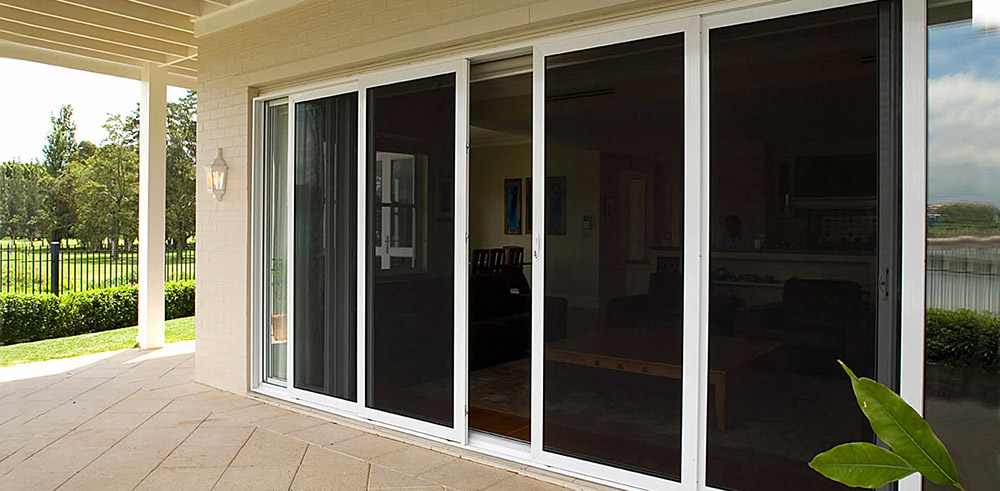
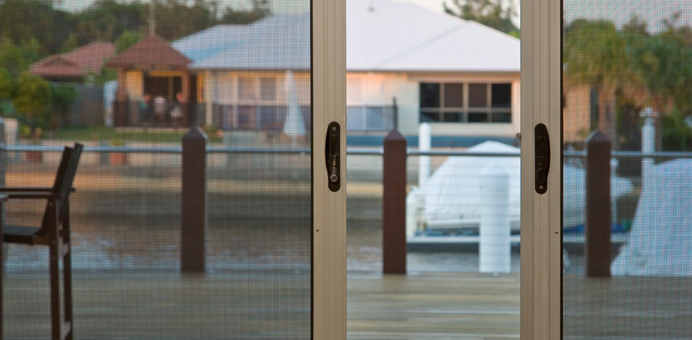

Today, we all need to undertake security measures for both domestic and commercial properties. Installing a security and fly screen door is one such measure we can take to minimize the opportunity for break-ins and discourage intruders from our homes.
EBS Aluminum Windows custom manufactures doors of any shape and size; ensuring your home is protected at all times.
These grilles can be inserted in any door and are tempered for greater strength. For superior protection, we recommend installing a security door with any application.
ALSPEC grills can be installed with:
Virtually maintenance free, both grilles and frames come in a range of styles and modern colours to suit any decor. Hinged Security doors are also an installation option. These types are manufactured from high quality Australian aluminum.
So add the value to your home with aesthetic appeal and superior strength of EBS Security Doors.
Like any of our quality designed products, flyscreen doors are customized at EBS Security Windows. It can be installed with any door or window in your home EBS Security Windows will devise a flyscreen solution for any of your requirements.
Our EBS security/flyscreen doors are manufactured from Australian aluminum. The aluminum frame offers sleek, modern design and will complement your home both inside and out. This type will keep away unwanted pests and debris whilst leaving the focus on your unique design.


Elite Blinds & Shutters is an Authorised INVISI-GARD dealer.
INVISI-GARD offers the highest door security. This type of door gives a clear view from the inside, but is a thick mesh on the outside. The thick mesh on the exterior of your door will deter intruders from entering your home or commercial property.
This type also acts as a flyscreen, allowing air to enter through the guard. INVISI-GARD can be customized and installed with any door at EBS Aluminum Windows. This product is equivalent of other popular security doors as seen on TV.
For security flyscreen doors and other security solutions customized to your requirement, Call EBS Security Windows on 1300 892 674 or submit an online enquiry form.
Fixed window security screens are becoming more of a requirement for the security conscious home owner. New homes and renovations of today often incorporate large windows as features in the overall design of the home. To cover these windows in conventional security grilles would seriously detract from the visual appeal of the home and as a result of this, security is often not an option.
INVISI-GARD Fixed Window Security Screens combine the proven strength and security of 316 Marine Grade Stainless Steel Mesh with extruded Aluminium perimeter framing to create a security window screen that looks great whilst providing excellent security.
Incorporating the unique patented EGP Retention System, INVISI-GARD Fixed Window Security Screens can be custom manufactured to fit many brands and styles of window and can be ordered with or without midrails. 316 Marine Grade Stainless Steel Mesh is used in all INVISI-GARD Stainless Steel Security Products and it is because of this Marine Grade Stainless Steel that INVISI-GARD out performs all other stainless steel security products when it comes to corrosion resistance.
Product strength and performance are key factors in deciding which security screens to purchase. All INVISI-GARD Fixed Window Security Screens have been tested to Australian Standards AS5039-2008 so you can be assured that when choosing INVISI-GARD, you are choosing the finest in Stainless Steel Security Products.